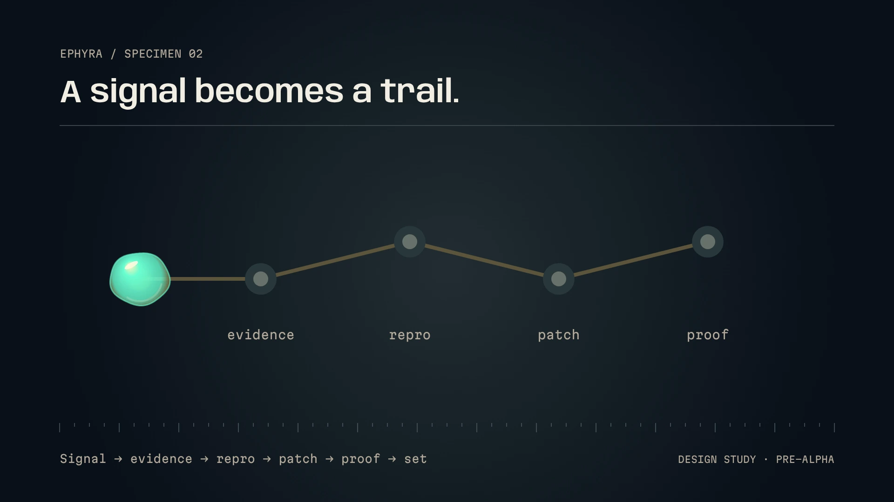
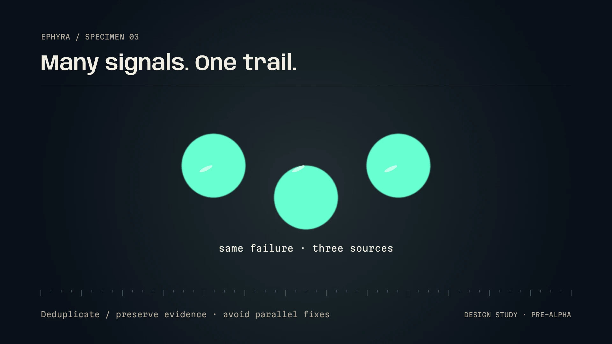
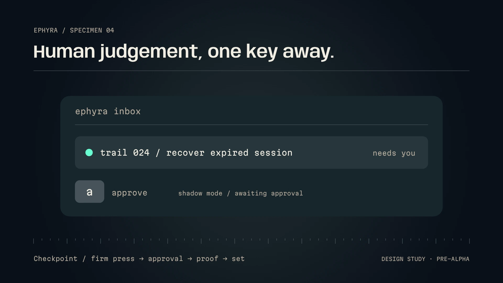
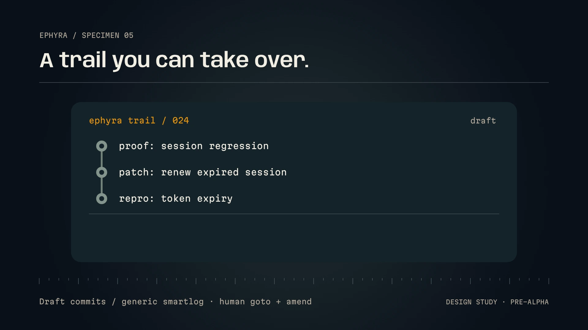
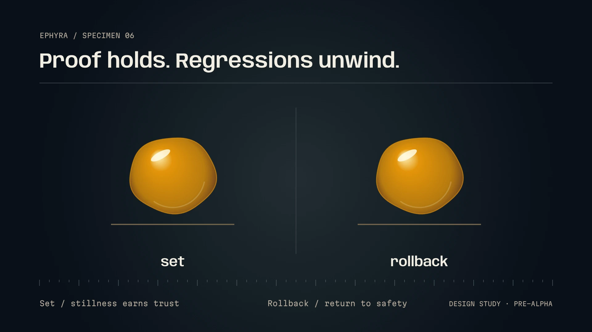

Pre-alpha · a design, not yet a product
Software that sets itself.
Ephyra is a design for open-source, self-hostable self-driving software. A production error becomes a trail: evidence, repro, patch, proof, landing, watch. Trails live in git on Radicle, Tangled or plain git. There is no pull request. Humans approve from a keyboard inbox exactly where policy says they must.
Design docs: product and loop · platform. Nothing below is running code yet.
Specimen 01 · the loop
Signal, trail, proof, set.
A signal appears
Errors, trace anomalies and failed probes arrive through OpenTelemetry. Code fingerprints them first; only new or re-rising fingerprints go on.
Duplicates merge
Two cheap System One calls judge each signal: actionable, duplicate of, regression of, conflicts with, severity, route. Duplicates fuse into the open trail instead of opening a second one.
The trail travels
Evidence from traces, the code graph and past trails. A hypothesis at checkpoint A. A failing repro in a sandbox, then a plan at B. Each checkpoint is blocking or advisory per code area.
Proof, then it sets
Repro fails at base and passes at head, tests run, regression and intent probes pass. The trail lands as a git ref, a Radicle patch, a Tangled pull or live into your devenv. It is watched, and reverts itself if the error returns.
A trail, not a pull request.
A trail is a directory committed to its own git ref, refs/ephyra/trails/<id>/journal, with one file per event so appends never conflict. It carries the signals, the triage records with the model that answered, the evidence index, hypothesis.md, plan.md, the proof manifest and the watch outcome. Pause and resume are properties of the record, not of a process. A forge object only mirrors it.

| Macroscope Murmur | PostHog self-driving | Entire Trails | Ephyra | |
|---|---|---|---|---|
| Unit of work | GitHub PR | GitHub PR | Trail, on the Entire forge | Trail, as git refs on any forge |
| Triggered by | Tasks, review and CI events | Signals inbox | Bug reports, agents, pushes | Prod signals, hunters, regressions, intent drift |
| Forge | GitHub | GitHub | Entire, or a GitHub mirror | Radicle, Tangled, plain git |
| Self-host | Control plane "soon" | No | No | Railway template or one devenv up |
| Triage tier | LLM | LLM | LLM review agents | System One models |
Murmur's event-to-running-agent loop and plain-English approvability file, PostHog's signals inbox and in-flight check, and Entire's checkpoints-as-git-refs are the three ideas this design stands on. Ephyra keeps using Entire's open-source CLI: entire search is an evidence source on any forge.
It does not wait for the crash.
Most of the loop is listening, and listening is nearly free. Four kinds of signal open trails:
- Production. Error spans, exception events and log anomalies against a per-route baseline.
- Hunters. Property tests over typed boundaries, fuzzers on parsers, scrubbed traffic replayed against a candidate sha, tracer bullets where code would reject but does not yet, and every Storybook and Textbook story rendered on each push.
- Regressions. Every closed trail leaves its repro behind as a probe. It runs on every landing that touches the trail's files, and nightly.
- Intent. Plain sentences you write, each with probes a machine can run. The only source that can say "nothing crashed, but the app no longer does what it is for".
intents/checkout-completes.md---
id: checkout-completes
area: payments
severity: high
probes:
- kind: http
every: 5m
request: { method: POST, url: "{{base}}/api/checkout" }
expect: { status: 200, p95_ms: 800 }
- kind: trace
every: 15m
query: 'span.name = "checkout.complete" AND status = ERROR'
expect: { rate_lt: 0.5%, window: 1h }
- kind: story
story: "Checkout/PaymentForm"
play: submit-valid-card
---
A signed-in or guest user can complete checkout for an
in-stock item with a valid card and receives an order
number on screen and by email within one minute.Drift is the sustained version of a failed probe: severity × (1 − pass_rate_24h / baseline_14d) × persistence. Above 0.3 it opens a trail even when no single failure was actionable.
Cheap judgement first. Agents only where code gets written.
No language model runs until a trail is routed. Triage is two calls to System One models: an extraction pass pulls typed fields out of the raw payload, and a judgement pass answers six questions with calibrated probabilities. Thresholds are keyed by the model identity each response reports. You pick the backend.

Hosted
Not Organic's extraction and judgement contracts. Clairic extracts, Jev decides. Paid from a wallet, reserve then settle, idempotent per signal.
Bring your own key
Workers AI for Clairic, TypeSafe for Jev, or any endpoint that speaks the same shapes. Ephyra meters it locally.
Self-hosted
Deterministic parsers for extraction until Clairic's weights ship. Liquid AI's d1 or Cloudflare's Clef, both with open weights, behind the decide adapter.
| Stage | Hosted | BYOK | Self-hosted |
|---|---|---|---|
| Fingerprint dedupe 10,000 → about 1,500 unique | $0 | $0 | $0 |
| Extraction 1,500 × about 2,000 tokens | $0.30 | $0.30 | $0, parsers |
| Decision, six questions 1,500 × about 3,000 tokens | $0.19 | $0.19 | about 72 s of one consumer GPU |
| System One total | about $0.49 | about $0.49 | about $0 plus hardware |
| LLM agent trails about 2% routed, so around 30 | $1 to $5 each, so $30 to $150 | depends on the local model | |
Listening to everything costs almost nothing in every column. The gate on spend is the route, and the route is a probability you calibrate per backend.
Humans at the checkpoints.
What a person sees is an inbox of checkpoints, not a wall of diffs. Each item is one trail at one decision: a title, severity, area, and the artefact that matters there. The hypothesis at A, the plan at B, the proof summary at C, or a spend request before asking real people anything.
- medium T-01j9 NPE in cart total when coupon expired would auto-approve
- high T-01ja checkout p95 over 800 ms after dependency bump
- spend T-01j7 30 respondents via Prolific, up to $45

Policy in plain English
One file, ephyra/autonomy.md, read by people and by the policy step. Areas bind to globs and say what the loop may do alone. Every area starts in shadow: decisions are computed and recorded, but the trail still waits for you. After a week, a report of would-approve against your verdicts tells you whether to flip it to enforce.
## area: cart
paths: src/cart/**
risk: medium
Agents may reproduce and patch. B is advisory; C is
blocking unless the change is under 40 lines, touches
no exported types, and the regression probes pass.
Then auto-land as trail_ref + devenv_live, watch 2h.
sl amend is a take-over.Your forge. Your box.
Git owns the durable record. Forge objects mirror it, so the same trail can land as a signed Radicle patch, a Tangled pull, a conditional branch update on a bare repo, or a live change applied into the devenv you are already running. Convex holds the hot state: the inbox, the job queue and the projections. A transition counts as durable only once the git journal accepts it. No Temporal cluster, no Redis.
Run it from a Railway template, with Railway Sandboxes for repro and patch work. Or run everything on your own Nix hardware with Firecracker microVMs, with no hosted model, GitHub account or Railway account required.
Works with
- Radiclepatches, COBs, CI broker
- Tangledknots, pulls, spindles
- plain gitbare repo, post-receive
- Saplingdraft stacks, ISL
- devenvone env, everywhere
- Railwaytemplate, sandboxes
Names are set in our own type on purpose. None of these projects endorse Ephyra, and none of it is integrated yet.

Jellyware.
Hardware, firmware, software, jellyware: software soft enough to reshape itself and firm enough to trust.
The term is Amp's, from the "Orbs and Jellyware" episode of Raising an Agent (August 2026). Their argument: the pain of a bug is how bad it is times how long it lives in production. For the loose edges of a system, landing fast, watching closely and rolling back automatically beats gating on review. Humans harden the core: schemas, auth, money, intents, and the blast-radius policy. The edges self-drive.
Ephyra is an attempt to build that calculus into the loop itself. When a landed trail's error fingerprint recurs, or a probe for its area fails twice, the jelly un-sets: the revert lands through the same mode, and the trail reopens one revision up with the watch data as evidence.

Follow along.
Ephyra is a design, written on 6 November 2026. The milestones are set, the open questions are listed, and no line of it runs yet. The first dogfood target is a real multi-service app on Radicle, devenv and Railway. Read the documents, argue with them, and watch this page change.
- M0 one service, one loop, one human: a production error becomes a landed, watched fix and the only key pressed is a
- M1 memory and the forge: Radicle patch landing, regression probes, intents,
entire search - M2 proof and hunting: story proofs, traffic replay, autonomy policy evaluated by the decision model, self-hosted d1 and Clef verified
- M3 people: voxq studies with spend approval, multiplayer trails, Sapling, Tangled
- M4 the jellyware loop: the agent's own prompts and policy evolve from closed trails, activated by a human